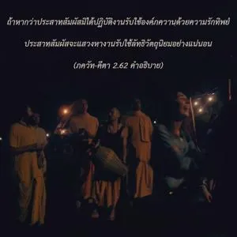
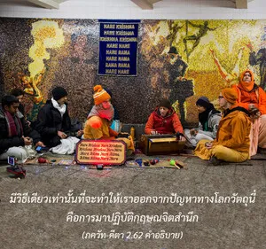
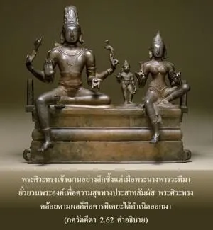

ขณะที่จิตใจจดจ่ออยู่ในรูป รส กลิ่น เสียง และสัมผัส ผู้นั้นก็จะเกิดความยึดติดต่อสิ่งเหล่านั้น จากการยึดติดราคะเริ่มก่อตัว และจากราคะความโกรธก็ตามมา



ผู้ที่ไม่มีกฺฤษฺณจิตสำนึกจะต้องตกอยู่ภายใต้ความต้องการทางวัตถุ ขณะที่จิตใจจดจ่ออยู่ที่รูป รส กลิ่น เสียง และสัมผัส ประสาทสัมผัสจำเป็นต้องปฏิบัติงาน ถ้าหากว่าประสาทสัมผัสมิได้ปฏิบัติงานรับใช้องค์ภควานฺด้วยความรักทิพย์ ประสาทสัมผัสจะแสวงหางานรับใช้ลัทธิวัตถุนิยมอย่างแน่นอน ในโลกวัตถุทุกๆคนรวมทั้งพระศิวะและพระพรหม โดยเราไม่ต้องกล่าวถึงเทวดาองค์อื่นๆบนสวรรค์ ล้วนอยู่ภายใต้อิทธิพลของรูป รส กลิ่น เสียง และสัมผัส มีวิธีเดียวเท่านั้นที่จะทำให้เราออกจากปัญหาทางโลกวัตถุนี้ คือ การมาปฏิบัติกฺฤษฺณจิตสำนึก พระศิวะทรงเข้าฌานอย่างลึกซึ้งแต่เมื่อพระนางปารฺวตี มายั่วยวนพระองค์เพื่อความสุขทางประสาทสัมผัส พระศิวะทรงคล้อยตาม ผลก็คือ การฺติเกย ได้กำเนิดออกมา เมื่อ หริทาส ฐากุร สาวกหนุ่มขององค์ภควานฺถูกยั่วยวนในลักษณะเดียวกัน โดยอวตารของ มายา-เทวี แต่ หริทาส สามารถผ่านการทดสอบไปได้อย่างง่ายดาย เพราะว่าท่านได้อุทิศตนเสียสละแด่องค์ศฺรี กฺฤษฺณด้วยความบริสุทธิ์ใจ ดังที่ได้กล่าวไว้ในโศลกของ ศฺรี ยามุนาจารฺย สาวกขององค์ภควานฺผู้มีความจริงใจจะสามารถหลีกเลี่ยงความสุขทางประสาทสัมผัสทั้งหมดได้ เนื่องจากได้รับรสความสุขทิพย์ที่สูงกว่าในความสัมพันธ์กับองค์ภควานฺ นี่คือเคล็ดลับแห่งความสำเร็จ ฉะนั้น ผู้ที่ไม่อยู่ในกฺฤษฺณจิตสำนึกไม่ว่าจะมีพลังอำนาจมากมายเพียงใดในการควบคุมประสาทสัมผัสด้วยการเก็บกดอย่างผิดธรรมชาติ ในที่สุดก็จะต้องล้มเหลวอย่างแน่นอน เพราะแม้แต่เสี้ยวแห่งความคิดเพื่อความสุขทางประสาทสัมผัสจะทำให้เขาหวั่นไหวไปกับการสนองความต้องการนั้น